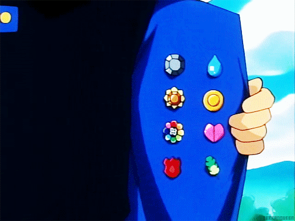
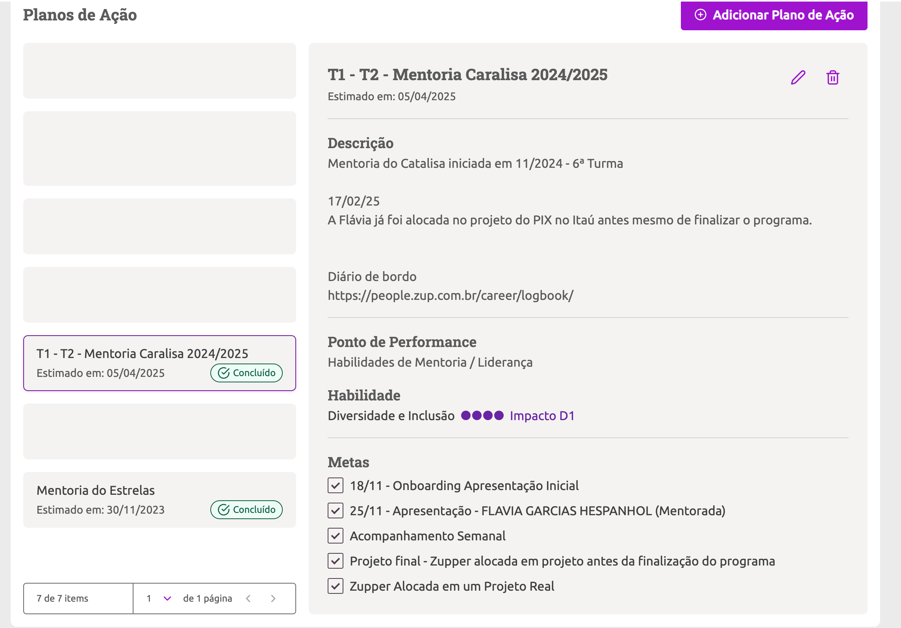

⠨⠑⠝⠑⠗⠛⠊⠁
⠧⠕⠇⠥⠝⠞⠁⠗⠊⠁ 🌟
Não conseguiu ler o título?
Escrito em portugues seria mais acessível para você?
Energia Voluntária 🌟

Rafael Toledo
Dev Backend
Rafael Toledo
Dev Backend
Rafael Toledo
Dev Backend

Rafael Toledo
Dev Backend


Para que serve a mentoria ?
Para que serve a mentoria ?
A mentoria tem como objetivo principal ser um ponto de apoio extra para a
pessoa em
formação.
O papel da pessoa mentora vai para além de tirar dúvidas técnicas,
mas é
também uma
referência de carreira e mercado de tecnologia, assim como uma
ponte com a realidade de projetos Zup.
Para que serve a mentoria ?
- Suporte em dúvidas técnicas
- Referência decarreira e mercado
- Ponte com a realidade de projetos Zup
O que se espera do mentor?
- Postura Ativa
- Apoio na elaboração de planos de ação
- Comunicação
E afinal, o que ganhamos com isso?
E afinal, o que ganhamos com isso?

Oportunidade de Desenvolver Soft Skills e Habilidades de Liderança
Mentorar outros desenvolvedores não é apenas uma forma de compartilhar conhecimento técnico, mas também uma oportunidade valiosa para aprimorar suas soft skills e habilidades de liderança.
Durante a mentoria você pode:
Melhorar a comunicação: Explicar conceitos complexos de forma clara e acessível ajuda a desenvolver uma comunicação eficaz.
Durante a mentoria você pode:
Fortalecer a empatia: Entender as dificuldades e perspectivas de outros desenvolvedores promove a empatia e a colaboração.
Durante a mentoria você pode:
Desenvolver habilidades de resolução de problemas: Ajudar outros a superar desafios técnicos aprimora sua capacidade de análise e solução de problemas.
Durante a mentoria você pode:
Praticar liderança: Orientar e inspirar outros desenvolvedores é uma excelente maneira de exercitar habilidades de liderança e gestão de equipes.
Essas habilidades são essenciais não apenas para o crescimento profissional, mas também para criar um ambiente de trabalho mais colaborativo e produtivo.
Apoio na criação do PDZ

Lembre-se: você será a principal referência profissional da pessoa que você está mentorando.